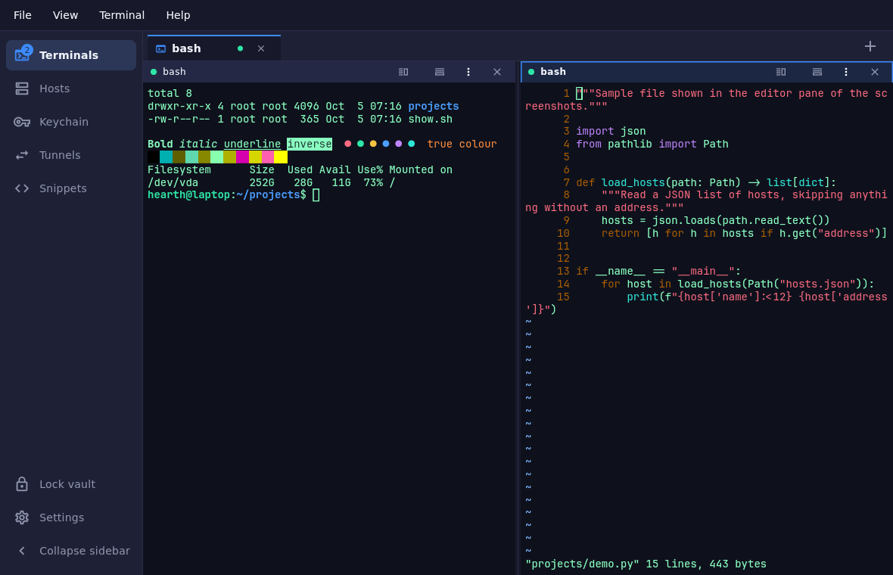
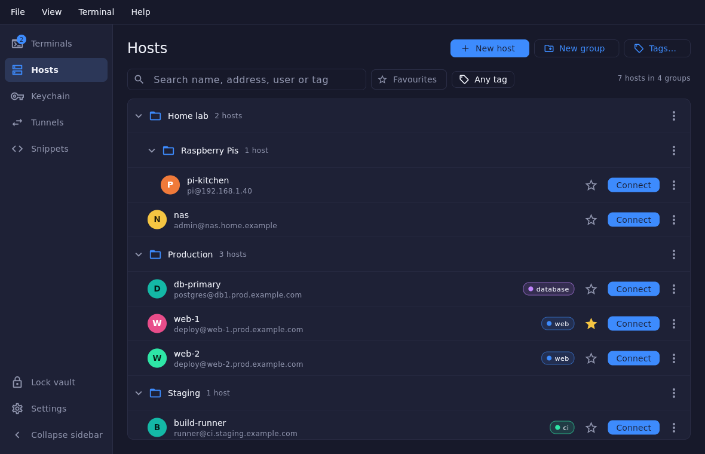

Connect with context
Organize hosts into nested groups. Add tags, favorites, inherited defaults, and reusable identities.
An SSH & local-shell workspace
A home for your terminals, connections, and the commands you reach for every day. Kept together in an encrypted desktop vault.
Linux tested Windows & macOS in development

Local firstNo account needed to work locally.
Encrypted vaultsYour hosts, keys, and saved secrets.
No telemetryNo HearthTerm-hosted backend.
One workbench. All your connections.
Keep the details close, from the first connection to the command you run a hundred times.
Organize hosts into nested groups. Add tags, favorites, inherited defaults, and reusable identities.
Arrange SSH sessions and local shells with tabs and split panes. Search scrollback and keep your layout.
Save searchable, encrypted snippets. Manage local, remote, and SOCKS tunnels with live status.

Small details, considered. Strict host-key checks. Automatic vault locking. Keyboard shortcuts. Light and dark themes.
Talk to usChoose how you keep it
Start with a local vault. Choose Google Sync when you want account recovery and your saved workspace on another computer.
Google Sync is implemented; production OAuth setup and live-account recovery validation are still in progress. Live terminals, scrollback, and external files are not synced.
Google Sync & your privacyMake yourself at home
Public downloads are being prepared. HearthTerm 4 is currently in alpha: Linux has been exercised end to end, while Windows and macOS still await real-machine validation.
Ask about availabilityKeep a separate backup of anything you cannot recreate.
Desktop · 4.0.0-alpha.1
Download links, supported platforms, and release notes will appear here when public builds are available.
Contact the developer